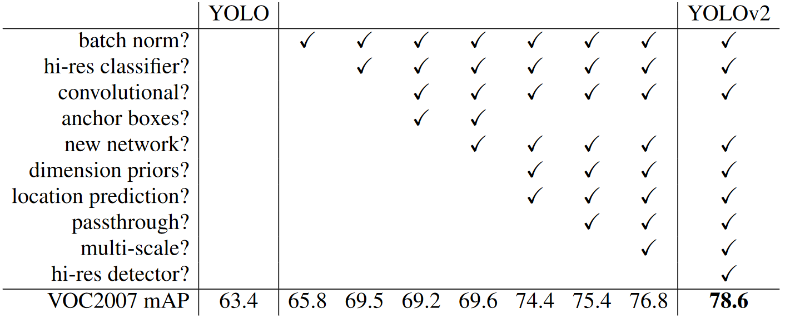

YOLOv2: YOLO9000: Better, Faster, Stronger
主要改变了YOLOv1中奇怪的边界框获取方式———非极大值抑制 non-maximum suppression，改为了类似Faster RCNN中的RPN(Region Proposal Network)的带锚点的直接调整边界框。
还有就是训练的时候每10轮就更改一次输入图像的大小，从而强制使训练得到的网络可以接受不同大小的输入。
还有一系列改进来获取训练集的方法。

YOLOv2相对于YOLOv1有许多不同之处。首先，YOLOv2使用了更深的网络，它有19个卷积层而不是YOLOv1的9个卷积层。其次，在使用Anchor Boxes进行边界框坐标预测时，YOLOv2使用了一种更加稳定和优化的预测方法，减少了模型训练过程中的不稳定性[1]。此外，YOLOv2在预测时使用了更多的特征图，改善了目标检测的性能[1][2]。另外，YOLOv2还引入了Batch Normalization和高斯损失等技术，它们进一步帮助模型收敛和提高检测精度[1][3]。最后，YOLOv2使用了一些新的技术来加速模型训练和改善检测性能，例如使用多尺度训练和在训练时引入随机数据变换等[1][4][5]。